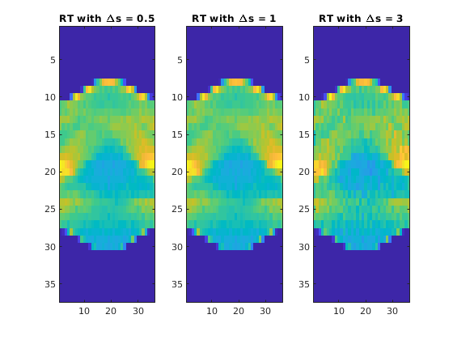
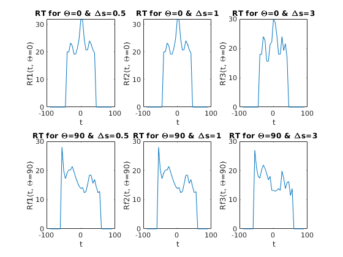
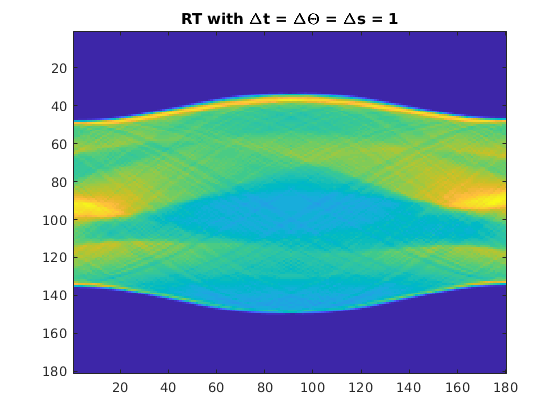

Contents
clear; tic;
Q1
img = phantom(128);
1(a)
Justification for deltaS : For step size <1, computations would be more, whereas for >1, the smoothness of the transform image is
lost because it would lead to very coarse approximations. So, considering the tradeoff between two, optimal choice for step size would be 1.
Interpolation scheme : We used the default interpolation scheme in interp2, i.e. bilinear interpolation. Other schemes like nearest
neighbour would have been faster but would be a very bad approximation for line integrals. Bilinear interpolation on the other hand is a good
measure to approximate line integrals.
1(c) - Comparison
deltaT = 5; deltaTheta = 5; figure(1); subplot(1,3,1); deltaS = 0.5; RT_1 = myRadonTrans(img, deltaT, deltaTheta, deltaS); imagesc(RT_1) title('RT with \Deltas = 0.5'); subplot(1,3,2); deltaS = 1; RT_2 = myRadonTrans(img, deltaT, deltaTheta, deltaS); imagesc(RT_2) title('RT with \Deltas = 1'); subplot(1,3,3); deltaS = 3; RT_3 = myRadonTrans(img, deltaT, deltaTheta, deltaS); imagesc(RT_3) title('RT with \Deltas = 3'); t = -90:deltaT:90; theta = 0:deltaTheta:180-deltaTheta; index_0 = find(theta == 0); index_90 = find(theta == 90); figure(2); subplot(2,3,1); plot(t, RT_1(:, index_0)); xlabel('t') ylabel('Rf1(t, \Theta=0)') title('RT for \Theta=0 & \Deltas=0.5') subplot(2,3,2); plot(t, RT_2(:, index_0)); xlabel('t') ylabel('Rf2(t, \Theta=0)') title('RT for \Theta=0 & \Deltas=1') subplot(2,3,3); plot(t, RT_3(:, index_0)); xlabel('t') ylabel('Rf3(t, \Theta=0)') title('RT for \Theta=0 & \Deltas=3') subplot(2,3,4); plot(t, RT_1(:, index_90)); xlabel('t') ylabel('Rf1(t, \Theta=90)') title('RT for \Theta=90 & \Deltas=0.5') subplot(2,3,5); plot(t, RT_2(:, index_90)); xlabel('t') ylabel('Rf2(t, \Theta=90)') title('RT for \Theta=90 & \Deltas=1') subplot(2,3,6); plot(t, RT_3(:, index_90)); xlabel('t') ylabel('Rf3(t, \Theta=90)') title('RT for \Theta=90 & \Deltas=3') % <html> % For deltaS=3.0, 1D plot appears to be the roughest as choosing larger step size would lead to a coarse and bad % approximation of the line integral. % <br> % For deltaS values 0.5 and 1, both the radon transform image and 1D plot looks almost the same because of the % bilinear inteprolation scheme. For deltaS values less than 1, the number of points for which interpolation needs % to be done between two pixels increase, but as it as linear scheme, the sum remains the same. % </html> 
1(d) - deltaT and deltaTheta values
RT = myRadonTrans(img, 1.0, 1.0, 1.0); figure(3); imagesc(RT) title('RT with \Deltat = \Delta\Theta = \Deltas = 1'); % <html> % As evident from the above plot, if we set deltaT = deltaTheta = 1, we obtain a much smoother radon transform % image than the one obtained for deltaT = deltaTheta = 5. So, ideally this should be selected. But, it takes % much more time to compute. Also, practically smaller values of deltaT and deltaTheta would also mean more X-ray % exposure to the patients which is not desirable<br> % So there is a tradeoff between smooth reconstruction and computation time. Along with these, there are some % practical factors which come into consideration. % </html>
1(e) - deltaS values
The resolution of the image determines the number of pixels to be chosen on the grid. For regions containing more
complex features, more pixels would be required for accurate reconstruciton and thus more resolution.
By accounting the tradeoff, the ideal value of deltaS should be taken to be the size of each pixel in the
grid as more smaller values of deltaS do not give appreciable increase in reconstruction.
For values of deltaS << 1, the computation time increases because integral computations increase but there is
not much imporvement. The computation time is more because matrix A would be very large and hence, each iteration
would require more computations.
On the other hand, for deltaS values >> 1, the computed integrals would be a very bad approximation to the
actual line integrals and thus will result in a poor reconstruction.
toc;
Elapsed time is 11.240641 seconds.